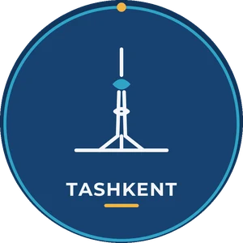
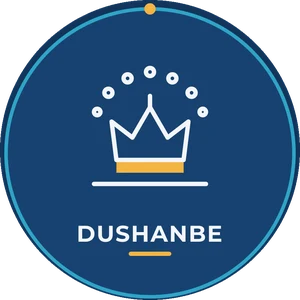

8 gün
8 günUZ
Klasik Özbekistan
Taşkent · Semerkant · Buhara · Hive
Taşkent, Semerkant, Buhara ve Hive tek yolculukta
başlayan… kişi başı
Turu gör →Orta Asya'da özel ve küçük grup turları — turkuaz kubbeler, çöl kampları, dağ gölleri ve en sıcak misafirperverlik. Her şeyi biz planlıyoruz, siz sadece seyahat edin.
Orta Asya'nın en güzel yerlerini tek bir seyahatte birleştirin — sınırlar, ulaşım ve rehberler bizden.
Semerkant, Buhara ve Hive — hızlı trenlerle birbirine bağlanan İpek Yolu'nun mavi kubbeli incileri.

Almatı'nın dağları, Çarın Kanyonu'nun kızıl duvarları ve kutsal şehir Türkistan.
Alp gölleri, göçebe yurtları, uçsuz bucaksız yaylalarda atlar ve Issık Göl kıyıları.
Antik Pencikent, Seyhun kıyısındaki Hucend ve dünyanın çatısı Pamirler.

Her ülkede altı denenmiş rota — haritayı, günlük programı ve fiyatı görmek için bir tur açın.
8 günTaşkent, Semerkant, Buhara ve Hive tek yolculukta
 5 gün
5 günİpek Yolu'nun iki incisi beş günde
 10 gün
10 günHive'den Semerkant'a, çölde yurt gecesiyle
 7 gün
7 günBüyük imamlar ve sufi ustalara ziyaret
 7 gün
7 günÇimgan, dağ köyünde konaklama ve yurt kampı
 6 gün
6 günHokand, Margilan ipeği ve Rişton seramiği
 4 gün
4 günŞehir, Medeu, Büyük Almatı Gölü ve Çarın
 5 gün
5 günGüneydoğu Kazakistan'ın kanyonları ve dağ gölleri
 8 gün
8 günAlmatı, göller, Türkistan ve Astana
 4 gün
4 günTürk dünyasının manevi başkentine ziyaret
 4 gün
4 günAntik petroglifler, renkli dağlar ve şarkı söyleyen kum
 4 gün
4 günFütüristik başkent ve 'Kazak İsviçresi'
 7 gün
7 günIlık göl, kızıl kayalar, kartalcılar ve kanyonlar
 5 gün
5 günYurtlar, atlar ve 3016 m'deki göl
 9 gün
9 günKırgızistan'ın en iyileri dokuz günde
 6 gün
6 günBuzul gölü ve Altın Araşan kaplıcaları
 6 gün
6 günTaş kervansaray ve yurtlarda geceler
 4 gün
4 gün 5 gün
5 günİskenderkul, Yedi Göl ve antik Pencikent
 10 gün
10 günDuşanbe'den Oş'a 'Dünyanın Çatısı'
 3 gün
3 günFan Dağları göllerine kısa bir kaçamak
8 günİpek Yolu şehri ve Fan Dağları gölleri
 6 gün
6 günHisar, İstaravşan, Hucend ve Soğd Pencikenti
 7 gün
7 günZümrüt göller arasında çadırlı yürüyüş
Aradığınız turu bulamadınız mı? Çiftler, aileler ve gruplar için özel rota hazırlıyoruz.
Tam tur almadan tek bir hizmet ayırtın — transfer, rehber, tren bileti veya otel.
Yerleri, gece sayısını, otelleri, ulaşımı ve rehberi seçin — rotayı haritada ve tahmini fiyatı anında görün.
Oluşturmaya başla →


Sadece tarihi eserler değil: dev kazanda pişen pilav, pazar sabahları ve yeni dostlarla çay.


Ekibimiz Özbekistan'da yaşıyor; her sokağı, rehberi ve gizli köşeyi biliyor.
Oteller, trenler, transferler, rehberler ve giriş biletleri — tek ve net bir pakette.
Helal yemekler, namaz vakitlerine uygun program ve aileler için rahat tempo.
İngilizce ve Rusça rehberler; Türkçe ve Arapça rehber talep üzerine.
Gizli ücret yok — rezervasyondan önce nelerin dahil olduğunu görürsünüz.
Tüm seyahat boyunca WhatsApp veya Telegram'da gerçek bir temsilci.
Moviy Travel ekibi 2,5 yılda 10.000'den fazla gezgine seyahat düzenledi. Moviy Nomad aynı ekip, rehberler ve şoförlerle şimdi dünyanın her yerinden gelen misafirlere hizmet veriyor: Özbekistan, Kazakistan, Kırgızistan ve Tacikistan turları.
Gezilerimizi Instagram'da görün: @moviy_travel58 bin takipçi · gerçek gezilerle 600+ gönderi→Tarihlerinizi, kişi sayısını ve isteklerinizi WhatsApp veya Telegram'dan iletin.
Grubunuz için gün gün program ve net fiyat hazırlıyoruz.
Sizi havalimanında karşılıyor, gerisini biz hallediyoruz.
Gezgin grubumuzdaki gerçek mesajlar, Özbekçeden çevrildi.
“Emeğiniz ve ilginiz için çok teşekkürler. Yılda bir kez seyahat etmeye karar verdim — sizinle, arkadaşlarım ve ailemle birlikte.”
“Hizmet mükemmeldi: şoförümüz Nodirbek herkese aileden biri gibi davrandı, uzun yol hiç hissedilmedi. Hâlâ düşünüyorsanız — gidin, pişman olmazsınız.”
“Annem ve babamla gittim, o kadar beğendiler ki gelecek yılı şimdiden planlıyoruz. Başta tereddüt ettim — artık çok tur şirketi var — ama gerçekten harikaydı.”
“Beklediğimizden de güzeldi. 500 kişiyi bir araya getirmek kolay değil. Lütfen böyle gezileri daha çok düzenleyin!”
“Geçen hafta benim için gerçekten unutulmazdı — belki de ilk seyahatim olduğu için. Harika izlenimler ve güzel insanların anılarıyla döndüm.”
“İlyosbek ve ekibine çok teşekkürler — iyi dinlenelim diye dürüstçe çalıştılar. Grupta birçok yeni arkadaş edindik.”
Gezginlerimizin paylaştığı fotoğraflar ve izlenimler. Bizimle seyahat ettiniz mi? Sizinkini ekleyin!
Henüz hikâye yok — ilk paylaşan siz olun.
Birçok ülkenin vatandaşları Özbekistan, Kazakistan ve Kırgızistan'a vizesiz ya da kolay bir e-vize ile gidebilir. Pasaport ülkenizi yazın, güncel kuralları sizin için kontrol edelim.
Şehirler için ilkbahar (Nisan–Haziran) ve sonbahar (Eylül–Ekim) idealdir. Yaz, Kırgızistan ve Tacikistan'ın dağları ve gölleri için en güzel mevsimdir.
Evet. Çiftler ve aileler için özel turların yanı sıra grup turları ve seyahat acenteleri için programlar hazırlıyoruz.
Bölgedeki yemeklerin çoğu helaldir. Programı namaz vakitlerine ve kutsal mekan ziyaretlerine göre de planlayabiliriz.
Bize WhatsApp veya Telegram'dan yazın. Programı onayladığınızda rezervasyonunuzu teyit eder ve ödeme bilgilerini göndeririz.
Evet. Acenteler ve gruplar için karşılama hizmetleri ve partner fiyatları sunuyoruz.
Size en uygun yolu seçin — fikirler, program ve fiyatla dönüş yapalım.
+998 99 980 42 14 · Safina Qozoqboyeva